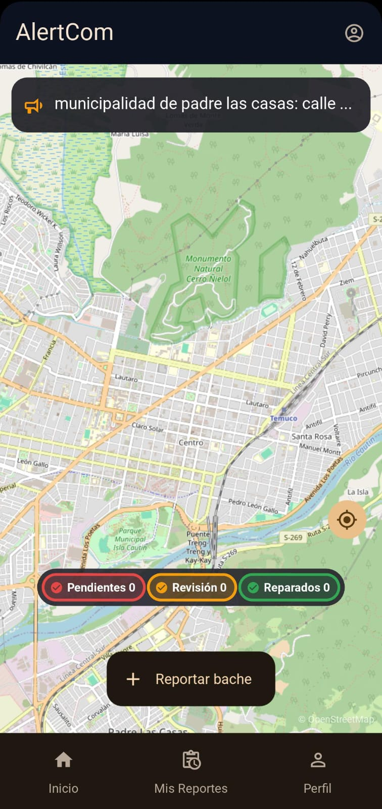

01
Mapa y reportes
Visualiza los reportes en el mapa, revisa su estado y accede a la opción para informar un bache.
Con AlertCom puedes informar sobre baches y problemas viales de tu entorno, compartir su ubicación y seguir el estado de tus reportes.
Estas son algunas pantallas reales de la aplicación: consulta el mapa de reportes y revisa las recomendaciones de seguridad antes de informar.
Visualiza los reportes en el mapa, revisa su estado y accede a la opción para informar un bache.

Antes de realizar un reporte, AlertCom recuerda detenerse en un lugar seguro y no utilizar la aplicación mientras se conduce.
AlertCom facilita la comunicación de problemas viales mediante herramientas sencillas y accesibles.
Registra un problema vial y comparte su ubicación para ayudar a identificar dónde ocurre.
Acompaña tu reporte con imágenes y detalles que permitan comprender mejor el problema.
Revisa los reportes que has realizado y consulta la información de cada uno.
Mantente informado sobre las actualizaciones y el avance de tus reportes.
La aplicación está pensada para que los ciudadanos puedan comunicar situaciones viales de manera clara.
Descubre AlertCom →Encuentra un bache u otra situación vial que necesite atención.
Agrega una descripción, fotografías y la ubicación correspondiente.
Revisa tus reportes y sus cambios de estado desde la aplicación.
AlertCom es una propuesta tecnológica orientada al reporte ciudadano de problemas viales. Busca acercar a las personas a los procesos de comunicación y seguimiento de incidencias en su entorno.
Descubre la aplicación móvil y participa en el cuidado de tu comunidad.
Descargar aplicación ↓Aplicación Android · Archivo APK